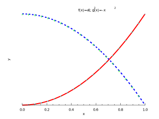
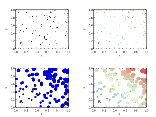
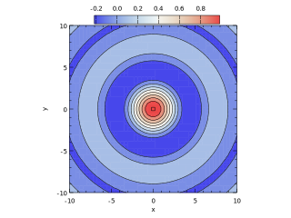
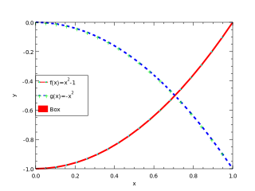
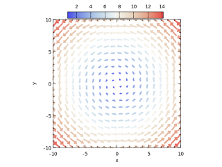
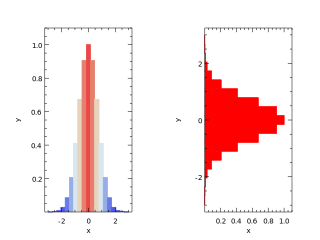
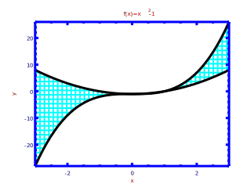
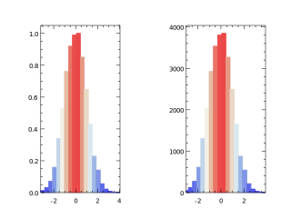
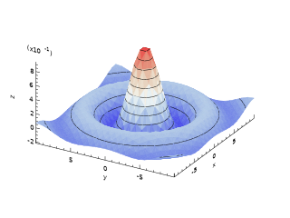
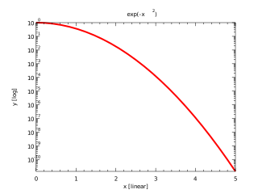

examples_prg Program
Uses:
- kinds_mod
- array_mod
- plplotlib_mod
A collection of example plots
Calls
Subroutines
subroutine doPlot()

Arguments
Nonesubroutine doScatter()

Arguments
Nonesubroutine doContour()

Arguments
Nonesubroutine doLegend()

Arguments
Nonesubroutine doQuiver()

Arguments
Nonesubroutine doBar()

Arguments
Nonesubroutine doFillBetween()

Arguments
Nonesubroutine doHist()

Arguments
Nonesubroutine doSurface()

Arguments
Nonesubroutine doError()

Arguments
Nonesubroutine doLogPlot()

Arguments
NoneSource Code
program examples_prg
!! A collection of example plots
use kinds_mod
use array_mod
use plplotlib_mod
implicit none
call setup(device='svg',fileName='media/example-%n.svg',figSize=[320,240],transparent=.true.)
call doPlot()
call doScatter()
call doContour()
call doLegend()
call doQuiver()
call doBar()
call doFillBetween()
call doHist()
call doSurface()
call doError()
call doLogPlot()
call show()
contains
subroutine doPlot
!! 
integer,parameter::N = 20
real(wp),dimension(N)::x,y
x = linspace(0.0_wp,1.0_wp,N)
y = x**2-1.0_wp
call figure()
call subplot(1,1,1)
call xylim(mixval(x),mixval(y))
call plot(x,y,lineColor='red',lineWidth=2.0_wp, &
& markStyle='.',markColor='cyan',markSize=2.0_wp)
call plot(x,-1.0_wp-y,lineColor='blue',lineStyle=':',lineWidth=2.0_wp, &
& markStyle='+',markColor='green',markSize=1.0_wp)
!~ call ticks()
call xticks(primary=.true.,secondary=.false.)
call yticks(primary=.true.,secondary=.false.)
!~ call labels('x','y','f(x)=x#u2#d-1; g(x)=-x#u2#d')
call xlabel('x')
call ylabel('y')
call title('f(x)=x#u2#d-1; g(x)=-x#u2#d')
end subroutine doPlot
subroutine doScatter
!! 
integer,parameter::N = 100
real(wp),dimension(N)::x,y,z
call random_number(x)
call random_number(y)
z = sqrt(x**2+y**2)
call figure()
call subplot(2,2,1)
call xylim([0.0_wp,1.0_wp],[0.0_wp,1.0_wp])
call scatter(x,y)
call ticks()
call labels('x','y','')
call subplot(2,2,2)
call xylim([0.0_wp,1.0_wp],[0.0_wp,1.0_wp])
call scatter(x,y,c=z)
call ticks()
call labels('x','y','')
call subplot(2,2,3)
call xylim([0.0_wp,1.0_wp],[0.0_wp,1.0_wp])
call scatter(x,y,s=(4.0_wp*z+1.0_wp),markColor='blue')
call ticks()
call labels('x','y','')
call subplot(2,2,4)
call xylim([0.0_wp,1.0_wp],[0.0_wp,1.0_wp])
call scatter(x,y,c=z,s=(4.0_wp*z+1.0_wp))
call ticks()
call labels('x','y','')
end subroutine doScatter
subroutine doContour
!! 
integer,parameter::N = 50
real(wp),dimension(N)::x,y
real(wp),dimension(N,N)::z
integer::i,j
x = linspace(-10.0_wp,10.0_wp,N)
y = linspace(-10.0_wp,10.0_wp,N)
forall(i=1:N,j=1:N)
z(i,j) = sin( sqrt(x(i)**2+y(j)**2) )/sqrt(x(i)**2+y(j)**2)
end forall
call figure()
call subplot(1,1,1,aspect=1.0_wp)
call xylim(mixval(x),mixval(y))
call contourf(x,y,z,10)
call contour(x,y,z,10)
call colorbar(z,5)
call ticks()
call labels('x','y','')
end subroutine doContour
subroutine doLegend
!! 
integer,parameter::N = 20
real(wp),dimension(N)::x,y
character(32),dimension(3,7)::series
x = linspace(0.0_wp,1.0_wp,N)
y = x**2-1.0_wp
call figure()
call subplot(1,1,1)
call xylim(mixval(x),mixval(y))
call plot(x,y,lineColor='red',lineWidth=2.0_wp, &
& markStyle='.',markColor='cyan',markSize=2.0_wp)
call plot(x,-1.0_wp-y,lineColor='blue',lineStyle=':',lineWidth=2.0_wp, &
& markStyle='+',markColor='green',markSize=1.0_wp)
! [name,textColor,lineStyle,lineColor,markStyle,markColor]
series(1,:) = [character(32)::'f(x)=x#u2#d-1','','-','r','.','c','']
series(2,:) = [character(32)::'g(x)=-x#u2#d','',':','b','+','g','']
series(3,:) = [character(32)::'Box','','','','','','r']
call legend('center left',series)
call ticks()
call labels('x','y','')
end subroutine doLegend
subroutine doQuiver
!! 
integer,parameter::N = 20
real(wp),dimension(N)::x,y
real(wp),dimension(N,N)::u,v,m
integer::i,j
x = linspace(-10.0_wp,10.0_wp,N)
y = linspace(-10.0_wp,10.0_wp,N)
forall(i=1:N,j=1:N)
u(i,j) = -y(j)
v(i,j) = x(i)
m(i,j) = sqrt(u(i,j)**2+v(i,j)**2)
end forall
call figure()
call subplot(1,1,1,aspect=1.0_wp)
call xylim(mixval(x),mixval(y))
call quiver(x,y,u,v,c=m,s=m,scaling=2.0_wp,lineWidth=2.0_wp)
call colorbar(m,10)
call ticks()
call labels('x','y','')
end subroutine doQuiver
subroutine doBar
!! 
integer,parameter::N = 21
real(wp),dimension(N)::x,y
x = linspace(-PI,PI,N)
y = exp(-x**2)
call figure()
call subplot(1,2,1)
call xylim(mixval(x)+[-0.1_wp,0.1_wp],mixval(y)+[ 0.0_wp,0.1_wp])
call bar(x,y,c=y,relWidth=1.0_wp)
call ticks()
call labels('x','y','')
call subplot(1,2,2)
call xylim(mixval(y)+[ 0.0_wp,0.1_wp],mixval(x)+[-0.1_wp,0.1_wp])
call barh(x,y,fillColor='r',relWidth=1.0_wp)
call ticks()
call labels('x','y','')
end subroutine doBar
subroutine doFillBetween
!! 
integer,parameter::N = 51
real(wp),dimension(N)::x,y1,y2
x = linspace(-3.0_wp,3.0_wp,N)
y1 = x**2-1.0_wp
y2 = x**3-1.0_wp
call figure()
call subplot(1,1,1)
call xylim(mixval(x),mixval([y1,y2]))
call fillBetween(x,y1,y2,fillColor='c',fillPattern='#',lineWidth=2.0_wp)
call plot(x,y1,lineColor='k',lineWidth=3.0_wp)
call plot(x,y2,lineColor='k',lineWidth=3.0_wp)
call ticks(color='b',lineWidth=3.0_wp)
call labels('x','y','f(x)=x#u2#d-1',color='r')
end subroutine doFillBetween
subroutine doHist
!! 
integer,parameter::N = 10000
real(wp),dimension(N,12)::r
real(wp),dimension(N)::x
real(wp),dimension(:,:),allocatable::h
call random_number(r)
x = sum(r,2)-6.0_wp
call figure()
call subplot(1,2,1)
call xylim(mixval(x),[0.0_wp,1.05_wp])
call hist(x,20)
call ticks()
h = binData(x,20,normalize=2)
call subplot(1,2,2)
call xylim(mixval(h(:,1)),[0.0_wp,1.05_wp*maxval(h(:,2))])
call bar(h(:,1),h(:,2),c=h(:,2),relWidth=1.0_wp)
call ticks()
end subroutine doHist
subroutine doSurface
!! 
integer,parameter::N = 24
real(wp),dimension(N)::x,y
real(wp),dimension(N,N)::z
integer::i,j
x = linspace(-10.0_wp,10.0_wp,N)
y = linspace(-10.0_wp,10.0_wp,N)
forall(i=1:N,j=1:N)
z(i,j) = sin( sqrt(x(i)**2+y(j)**2) )/sqrt(x(i)**2+y(j)**2)
end forall
call figure()
call subplot(1,1,1,is3d=.true.)
call xyzlim(mixval(x),mixval(y),mixval(z),zoom=1.1_wp)
call surface(x,y,z,11)
!~ call wireframe(x,y,z,lineColor='k')
call box('x','y','z')
end subroutine doSurface
subroutine doError
!! 
integer,parameter::N = 25
real(wp),dimension(N)::x,y,xe,ye
real(wp),dimension(12)::r
real(wp)::m,s
integer::k
x = linspace(0.0_wp,5.0_wp,N)
y = 1.0_wp/(x**2+1.0_wp)
do k=1,N
call random_number(r)
r = 0.25_wp*(2.0_wp*r-1.0_wp)
m = sum(r)/real(size(r))
s = sqrt(sum((r-m)**2)/real(size(r)-1))
x(k) = x(k)+m
xe(k) = s
call random_number(r)
r = 0.15_wp*(2.0_wp*r-1.0_wp)
m = sum(r)/real(size(r))
s = sqrt(sum((r-m)**2)/real(size(r)-1))
y(k) = y(k)+m
ye(k) = s
end do
call figure()
call subplot(1,1,1)
call xylim(mixval([x-xe,x+xe])+[-0.5_wp,0.5_wp],mixval([y-ye,y+ye])+[-0.2_wp,0.2_wp])
call errorbar(x,y,xerr=xe,yerr=ye,lineColor='b',lineWidth=1.0_wp)
call plot(x,y,lineStyle='',markStyle='s',markColor='r',markSize=1.5_wp)
call ticks()
call labels('x','y','')
end subroutine doError
subroutine doLogPlot
!! 
integer,parameter::N = 25
real(wp),dimension(N)::x,y,yl
x = linspace(0.0_wp,5.0_wp,N)
y = exp(-x**2)
yl = log10(y)
call figure()
call subplot(1,1,1)
call xylim(mixval(x),mixval(yl))
call plot(x,yl,lineColor='r',lineWidth=2.0_wp)
call ticks(logy=.true.)
call labels('x [linear]','y [log]','exp(-x#u2#d)')
end subroutine doLogPlot
end program examples_prg